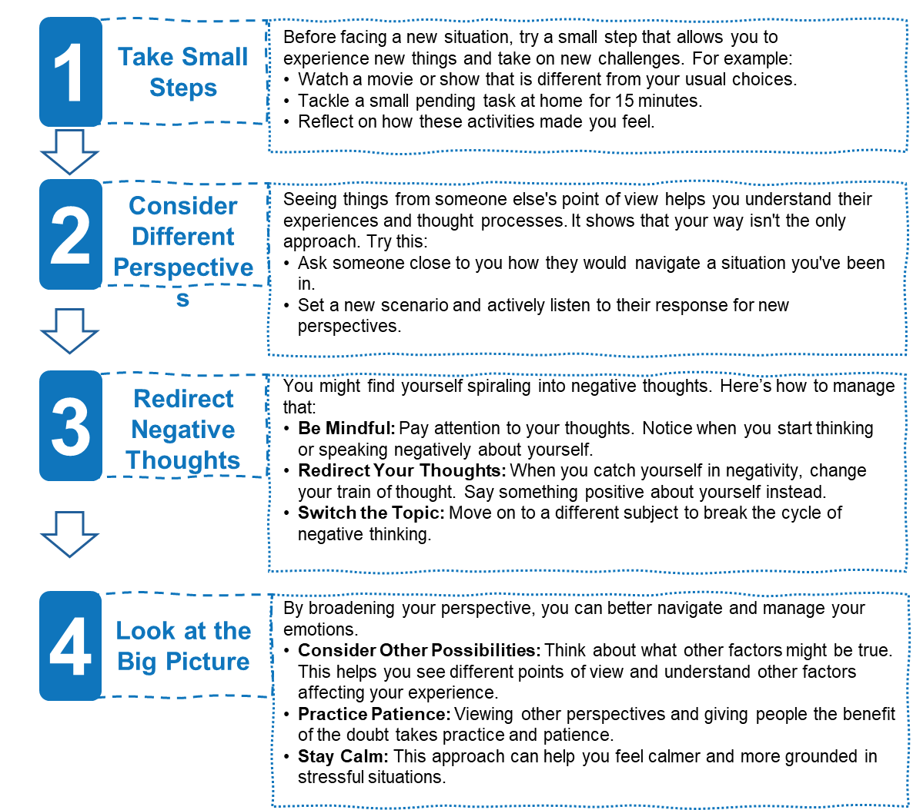

Session 3: The Role of Emotions and Behavior in Mental Health
Session 3 Overview
In this third session, we will look into the ability to navigate a stressful situation by regulating emotions in a positive healthy way. We will provide you with an example of how cognitive reframing, the ability to influence how your emotions are felt by changing the meaning of the situation, can increase your ability to remain calm and redirect negative thoughts.
Learning Objectives
- Increase your Ability to Recognize Patterns of Thinking: Learn how the thoughts, feelings, and emotions you experience contribute to your mental health and well-being.
- Recognize the Your Role in Redirecting Negative Thinking: Increase your awareness of how your brain processes emotions through your initial thoughts and feelings
- Build on Your Personalized Toolkit to Improve your Navigate Unpleasant Emotions: Develop your resources and skills by taking small guided steps to improve your perception and experiences with emotions, enhancing your ability to control and reduce strong feelings.
Navigating Stressful Situations with Emotional Regulation
Getting into the right frame of mind can be challenging, especially when under stress. Stress can overwhelm us and disrupt our emotional balance. However, there are skills, practices, and techniques such as movement/exercise, mindfulness, and time management that can help lower stress levels and improve emotional processing.?
Healthy Expression of Emotions:Expressing your emotions in a healthy way is key to emotional regulation. Consider what you currently do to express your emotions. How do you react to unpleasant feelings in a situation? By changing the meaning associated with an event, you can influence how your emotions are felt—a technique called cognitive reframing.
Example of Cognitive Reframing: Imagine you have a performance review at work and receive constructive criticism about a project. Initially, you might feel defensive, but by reframing the situation, you can view it as an opportunity for growth. You decide to take the feedback and implement it into your practice.
Finish and Test Your Knowledge
Now it’s time to see how much you understood in this session. These questions are simply meant to help you get the most out of this session and are not graded or scored!
Click the test your knowledge and once you have finished it, the session will be submitted as complete.